Anna ha una giornata molto semplice. Questo testo riguarda solo come trascorre il sabato. Di solito pranza con i suoi genitori. Spesso va a fare shopping con le amiche. Le piace anche andare al cinema. Mi chiedo qual è il suo film preferito.
Giovane ha una giornata normale. Viaggia molto. Il testo menziona tutti gli orari in cui arriva e parte. Pranza solo per mezz'ora. Dopo il lavoro, non torna direttamente a casa, ma va a nuotare. Gli piace leggere prima di andare a letto.
Questo testo racconta la storia di una donna di nome Maria. È molto impegnata e studia. Ha una lezione di matematica e deve studiare per un esame. Compra frutta e pane. È anche contenta di vedere il suo amico quando lo incontra. Il sabato è molto stanca e quindi riposa tutto il giorno.
Questa è una storia che una donna di nome Clara scrive a Giorgia. A quanto pare Giorgia le aveva comprato un libro per il suo esame. Clara studia arte contemporanea. È andata a una festa di sua cugina e le ha fatto un regalo.
Il mio amico John vive in Irlanda con sua moglie italiana, Debora, e i loro due figli bilingui, Mark e Mary. Ha conosciuto Debora durante un viaggio a Firenze, dove si è fermato per stare con lei, e si sono sposati sei anni fa. John lavora come infermiere a Dublino, ha una vita impegnata, ma torna in Italia una volta all'anno, momento in cui possiamo rivederci.
Gloria lavora alla reception di un hotel famoso, dove indossa una divisa celeste e accoglie molti clienti stranieri, grazie alla sua conoscenza delle lingue. La hall dell'hotel è elegante, con un tappeto rosso, mobili di legno e tende ricamate. Dopo il lavoro, prende un treno affollato per tornare a casa, che è lontana, e arriva sempre molto stanca.
Luca vive in un appartamento piccolo ma accogliente nel centro della città, con un salotto spazioso e arredato con un divano rosso e un tavolo da pranzo. La sua camera è molto piccola, con solo un letto blu, un armadio antico e un lampadario di cristallo. Anche la cucina è piccola e non ha nemmeno un frigorifero.
Il gatto è uno degli animali domestici più amati grazie al suo carattere riservato ma socievole. Ama dormire di giorno e uscire di notte, specialmente se ha accesso a un giardino. Le razze più comuni in Europa sono il soriano, dal pelo striato, e il certosino, dal manto grigio. audio VOC: poltrone = arm chairs, stare svegli = stay awake, to be pampered = essere coccolati, i padroni amano = owners love, corporatura = body shape
Un uomo decide di cambiare vita e parte per un lungo viaggio. Arriva in un piccolo paese, visita la piazza e pranza in un ristorante prima di riprendere il cammino. Alla fine, trova un tranquillo borgo di montagna dove sceglie di fermarsi e iniziare una nuova vita. audio
alarm clock
la sveglia
hamlet
borgo
gardener
giardiniere
woods
bosco
path
sentiero
wanted a change of scenery
voglia di cambiare aria
and various buildings
e vari palazzi
orange ade
un’aranciata
only a few houses
solo poche case
Marco si è svegliato tardi perché la sveglia non ha suonato e ha dovuto correre al lavoro. Durante la giornata ha lavorato con fatica, ma la sera si è rilassato a cena da un collega. Prima di dormire ha controllato bene la sveglia e il giorno dopo è arrivato puntuale. audio
alarm clock
la sveglia
woke up late
si è svegliato tardi
suddenly
improvvisamente
ran straight to work
è corso subito al lavoro
the boss
il capo
worked lazily until five
ha lavorato pigramente fino alle cinque
had a lot of fun
si è molto divertito
went to bed
si è messo a letto
went to sleep immediately
si è addormentato subito
with difficulty
con fatica
he relaxed
si è rilassato
Da bambino vivevo vicino a una fattoria e trascorrevo molto tempo con gli animali e con i proprietari, Carlo ed Elisabetta. Quando mi sono trasferito a Milano, ho perso il contatto con loro, ma ho conservato un bel ricordo della loro ospitalità. Nonostante la nostalgia per la campagna, mi sono ambientato bene in città grazie ai nuovi amici. audio
a factory and a farm
una fabbrica e una fattoria
the owner
il proprietario
he understood immediately if
capiva subito se
I often think back to Carlo
ripenso spesso a Carlo
I never saw them again
non li ho più rivisti
I really missed my old house
mi mancava molto la mia vecchia casa
despite the nostalgia
nonostante la nostalgia
thanks to new friends
grazie ai nuovi amici
immediately, usually, often
subito, solitamente, spesso
La nostra casa è piccola ma accogliente e ha tutto il necessario. Ci sono una cucina, un salotto, una camera da letto e persino una stanza e un bagno per gli ospiti. Abbiamo anche un terrazzo con fiori che rende l’appartamento ancora più piacevole.
there is everything we need
c’è tutto quello che ci serve
a living room
un salotto
a mat
un tappetino
under the bed
sotto al letto
the slippers
le ciabatte [chah-BAT-tay]
a sink, two sinks
un lavandino, due lavandini
the towel, the towels
l'asciugamano, gli asciugamani
for guests
per gli ospiti
there are the curtains
ci sono le tende
on the second floor
al secondo piano
and even a guest room
e persino una stanza per gli ospiti
even more enjoyable
ancora più piacevole
Alcuni vivono in appartamenti in città, mentre altri abitano in case in campagna. Gli edifici hanno colori e caratteristiche diverse, come balconi, porte di legno e tetti rossi. Ogni casa ha il suo stile unico e riflette il luogo in cui si trova.
it has a brown wooden door
ha la porta di legno marrone
which is located between two other taller buildings
che si trova tra altri due edifici più alti
red and pink
rossa e rosa
it is located between a green and a pink building
si trova in mezzo ad un palazzo verde e ad uno rosa
a small house with a red roof
una piccola casa dal tetto rosso
and reflects the place where it is located
e riflette il luogo in cui si trova
Maria studia pedagogia a Siena e cerca un lavoro nel fine settimana per coprire le spese, compatibilmente con le lezioni. Claudio, studente di musica, suona chitarra e violino e cerca un impiego occasionale a causa del poco tempo libero. Giorgia, da sei mesi a Bologna, desidera un lavoro part-time serale per conciliare studio ed esperienza lavorativa.
to be an elementary school teacher
fare la maestra alle scuole elementari
to pay my expenses
per pagarmi le spese
I'm looking for a weekend job
cerco un lavoro nel fine settimana
I also play in a musical group
suono anche in un gruppo musicale
maybe in the evening
magari la sera
so I can study during the day
così di giorno posso studiare
last summer
la scorsa estate
to cover the expenses
per coprire le spese
and is looking for casual employment
e cerca un impiego occasionale
he is looking for a new job because his contract expires next month
sta cercando un nuovo impiego perché il suo contratto scade il mese prossimo
to combine study and work experience
per conciliare studio ed esperienza lavorativa
Ieri sono andata con un'amica ai Musei Vaticani, rimanendo colpita dalla loro grandezza e dalla bellezza della Cappella Sistina, dipinta da Michelangelo. La guida ci ha raccontato la storia dei musei, e ho apprezzato in particolare la sala con i dipinti delle mappe dell’Italia cinquecentesca. Nonostante la visita fosse affascinante, il museo è così vasto che ho deciso di tornare per vedere tutto.
the thing that struck me the most
la cosa che mi ha colpito di più
that we have all heard about
di cui tutti abbiamo sentito parlare
was completed in 1483
è stata ultimata nel 1483
Michelangelo became almost blind
Michelangelo è diventato quasi cieco
in real life was even more beautiful
dal vivo era ancora più bella
he explained the history of the Museums to us
ci ha spiegato la storia dei Musei
another thing I really liked was the hall
un’altra cosa che mi è piaciuta molto è stata la sala
the room from which our tour started
La sala da cui è partito il nostro giro
among which there was also a mummy
tra cui c’era anche una mummia
so I think I'll be back very soon
per cui credo che tornerò molto presto
be struck by its greatness
rimanere colpito dalla sua grandezza
I particularly appreciated the hall
ho apprezzato in particolare la sala
although the visit was fascinating
nonostante lavisita fosse affascinante
Pino ha una famiglia numerosa con sei figli, tra cui Camilla, Olga, Marco, Claudio, Federica e Davide. Ogni figlio ha caratteristiche fisiche e personalità diverse, come l’altezza e l’amore per la scuola. Inoltre, la famiglia ha un cane che Pino considera come un membro a tutti gli effetti.
is a very tall, bald gentleman with brown eyes
è un signore molto alto, calvo e con gli occhi marroni
has dark hair
ha i capelli scuri
has lighter hair than Camilla
ha i capelli più chiari di Camilla
including Camilla, Olga, ...
tra cui Camilla, Olga, ...
for all intents and purposes
a tutti gli effetti
Giulia e Gaia sono sorelle molto diverse: Giulia è più brava a scuola, mentre Gaia eccelle nello sport. Tuttavia, un infortunio impedisce a Gaia di praticare attività fisica, rendendola triste. Nonostante le loro differenze, le due sorelle si vogliono molto bene.
and at school always gets excellent grades
e a scuola prende sempre voti ottimi
his math grades are terrible
suoi voti in matematica sono pessimi
they are even worse
sono addirittura peggio
when he goes to the gym
quando va in palestra
he is afraid of the deep water in the swimming pool
ha paura dell’acqua alta della piscina
is very good at running and has really good times
è molto brava nella corsa e fa dei tempi davvero ottimi
without ever getting tired
senza stancarsi mai
because she broke her leg
perché si è rotta una gamba
while Gaia excels in sports
mentre Gaia eccelle nello sport
Mio zio vive in Thailandia da molti anni e torna raramente in Italia perché il viaggio è costoso. Nonostante i suoi propositi di venire a trovarci, ha dovuto annullare l'ultimo viaggio a causa di un intervento chirurgico. Ora ha una famiglia con due figli gemelli, che desiderano visitare l'Italia, e lui promette loro che lo faranno presto. audio
two twin children
due figli gemelli
the children always ask their father
I bambini chiedono sempre al padre
eeeeeee
iiiiiiiiiiiiii
eeeeeee
iiiiiiiiiiiiii
eeeeeee
iiiiiiiiiiiiii
eeeeeee
iiiiiiiiiiiiii
eeeeeee
iiiiiiiiiiiiii
eeeeeee
iiiiiiiiiiiiii
eeeeeee
iiiiiiiiiiiiii
eeeeeee
iiiiiiiiiiiiii
eeeeeee
iiiiiiiiiiiiii
eeeeeee
iiiiiiiiiiiiii
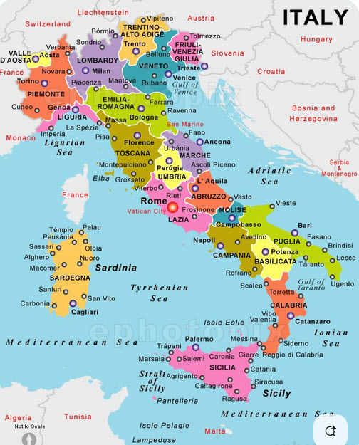
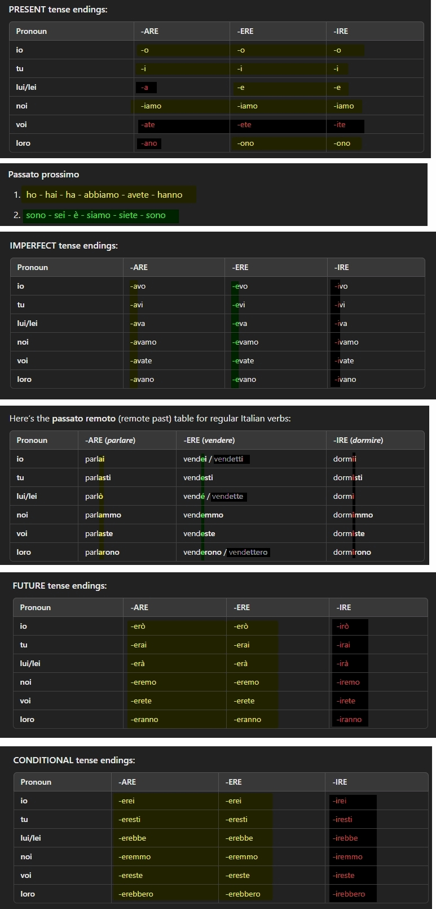
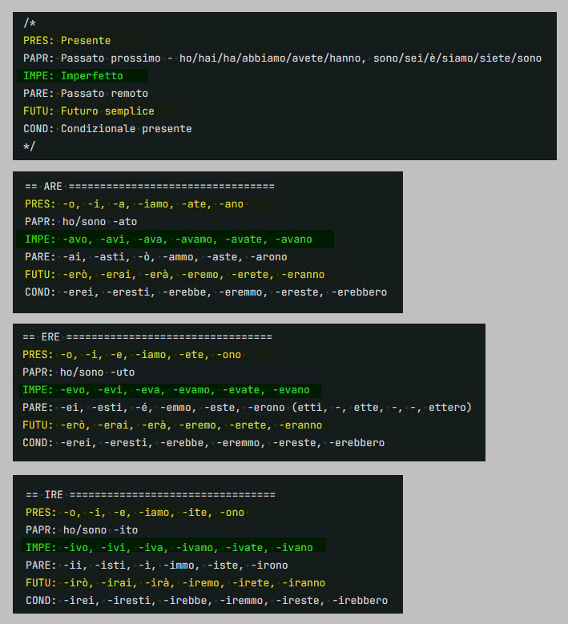
-are (area 51), -ere (era, lackner base), -ire (ireland, top of hiking trail)
mangerà = he will eat
sta per mangiare = he's about to eat
va a mangiare = he's going to eat
andrà a mangiare = he will go eat
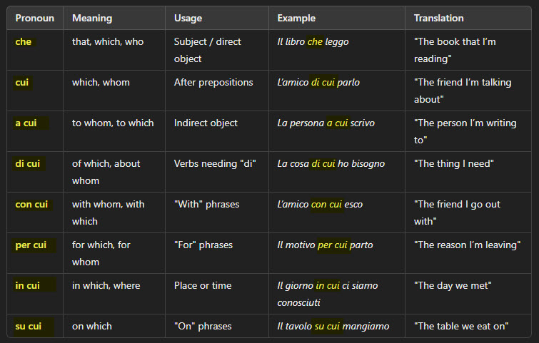
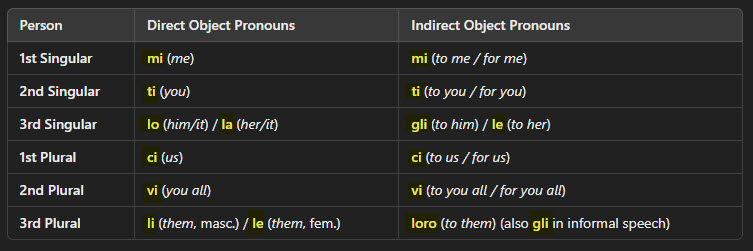
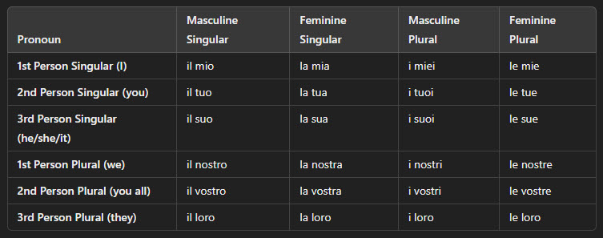
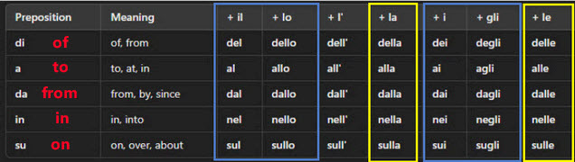
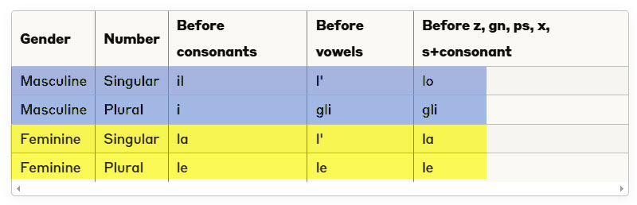
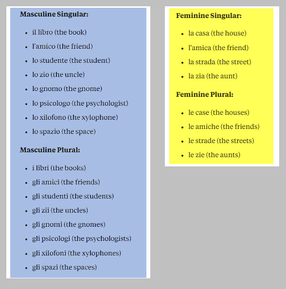
ChatGPT sta allucinando su questo
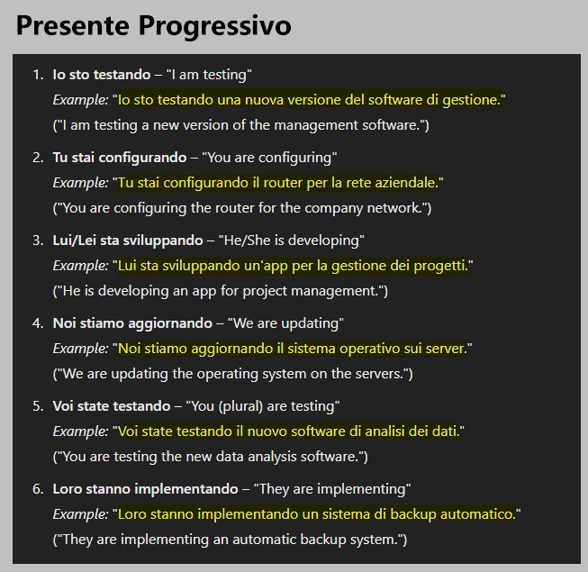
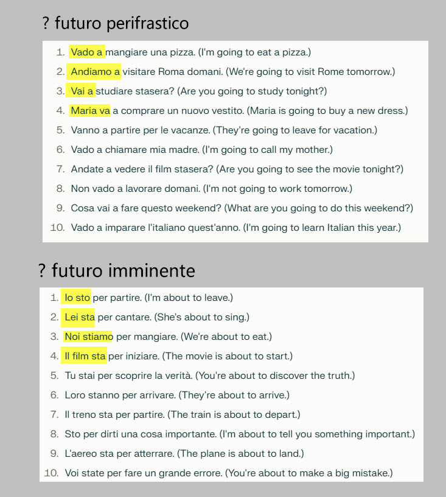
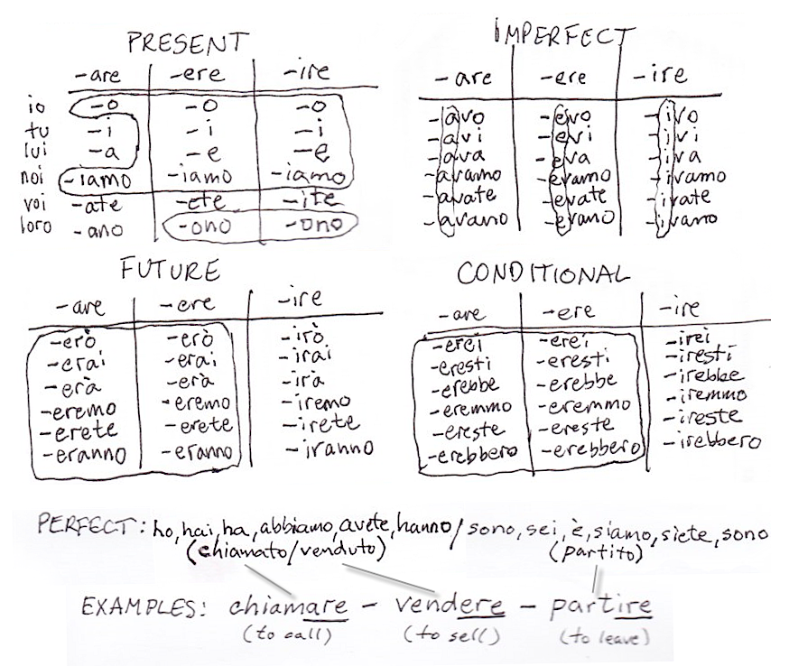
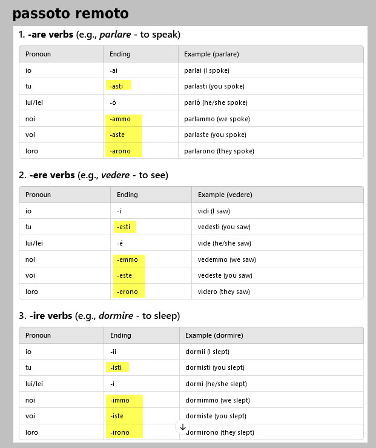
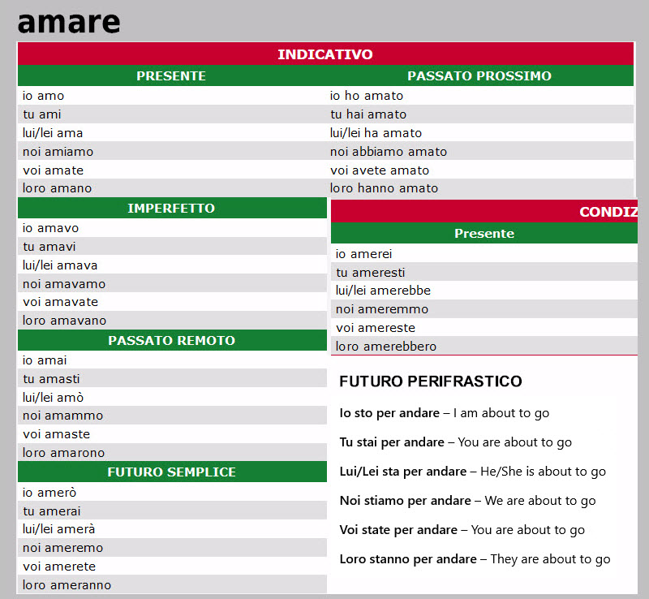
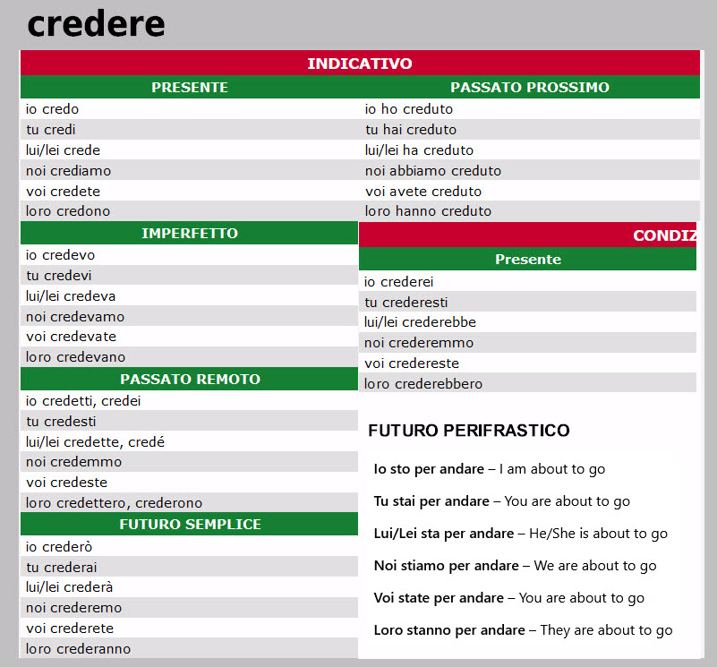
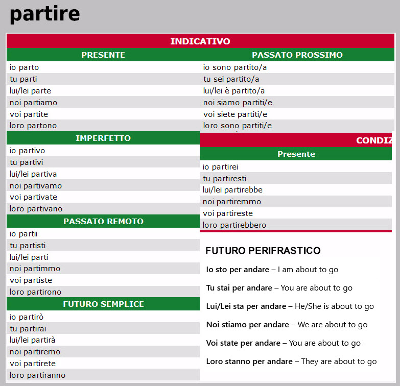
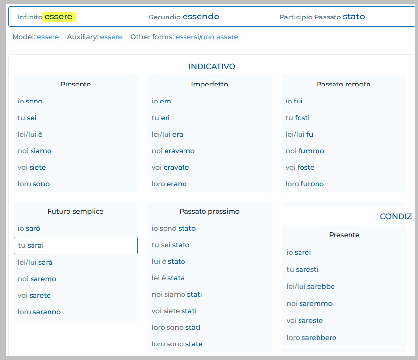
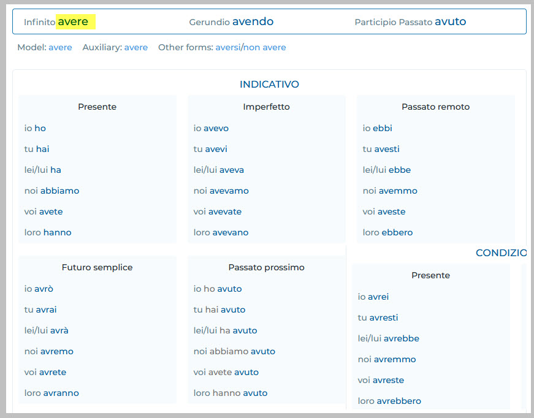
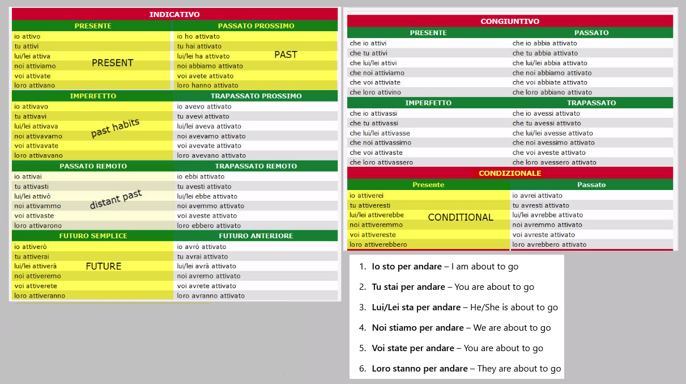
- presente
Grammar books will list up to 21 different verb tenses. LEARN THESE 5 FIRST, AS THEY ARE PRETTY MUCH ALL YOU NEED: 1. presente --> PRESENT 2. passato prossimo --> RECENT PAST 3. imperfetto --> HABITUAL PAST 4. futuro semplice --> FUTURE 5. condizionale presente --> CONDITIONAL ------------------------------------------------------------------------------------------------------------ - presente (PRESENT) - pres - a fact that is always true - L'acqua bolle a 100 gradi. / Water boils at 100 degrees - ongoing action in the present - Il signor Rossi lavora a casa oggi. / Mr. Rossi is working at home today. - a habitual action - Prendi un caffè ogni giorno? / Do you have a cup of coffee every day? - Vanno sempre in discoteca il sabato. / They always go dancing on Saturday. - an action that will happen in the future - Torni a casa domani? / Will you go back home tomorrow? - No, sto qui fino a venerdì. / No, I will stay here until Friday. - action that began in the past and continues to the present - Da quando Lei lavora qui? / How long have you been working here? - Lavoro qui da tre anni. / I have been working here for three years. - Da quanto tempo sei malato? / How long have you been sick? - Sono malato da tre giorni. / I've been sick for three days. - a past action expressed with dramatic effect - Cristoforo Colombo attraverso l'Oceano Atlantico nel 1492. / Christopher Columbus crosses the Atlantic Ocean in 1492. - L'Italia diventa una nazione nel 1861. / Italy becomes a nation in 1861. - Dieci anni dopo Roma diventa la capitale del nuovo paese. / Ten years later Rome becomes the capital of the new country. - passato prossimo (RECENT PAST) - pass - a fact or action that happened in the recent past - Ho appena chiamato. / I just called. - Questa mattina sono uscito presto. / This morning I left early. - a fact or action that occurred long ago but still has ties to the present - Mi sono iscritto all'università quattro anni fa. / I entered the university four years ago. - Il Petrarca ha scritto sonetti immortali. / Petrarch wrote enduring sonnets. - imperfetto (HABITUAL PAST) - impe - a habitual action in the past - Giocavo a calcio ogni pomeriggio. / I played soccer every afternoon. - actions or conditions that lasted an indefinite time in the past - Sempre credevano tutto. / They always believed everything. - Volevamo andare in Italia. / We wanted to go to Italy. - facts regarding time, age, and weather in the past - Il cielo era sempre blu. / The sky was always blue. - futuro semplice (FUTURE) - futu - an action which has yet to happen - Domani andrò al mare. / I'm going to the beach tomorrow. - Partiranno la settimana prossima. / They're leaving next week. - Pranzeremo alle 14:00. / We are going to have lunch at 2pm. - Tra tre giorni sarete già in vacanza. / In three days' time you'll already be on holiday. - Alla fine di settembre partirò per Roma. / At the end of September I will leave for Rome. - condizionale presente (CONDITIONAL) - cond - an action which depends on something else - Scriverei a mia madre, ma non ho tempo. / I would write to my mother, but I don't have time. - Mi daresti il biglietto per la partita? / Would you give me a ticket for the game? - used to express politeness - Vorrei un caffè. / I would like a coffee. ------------------------------------------------------------------------------------------------------------ As you read and study Italian, look up verbs here to find their infinitives and understand why they are conjugated as they are: www.italian-verbs.com ------------------------------------------------------------------------------------------------------------
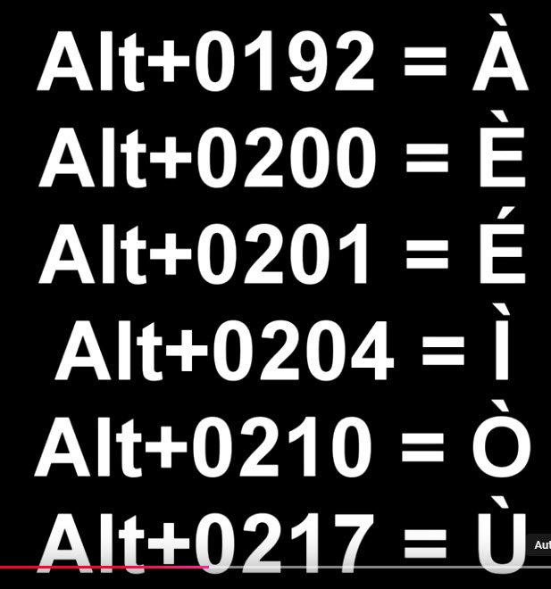